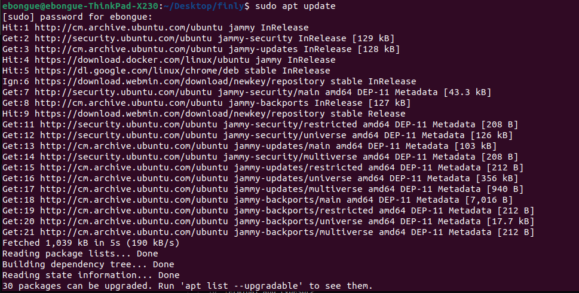
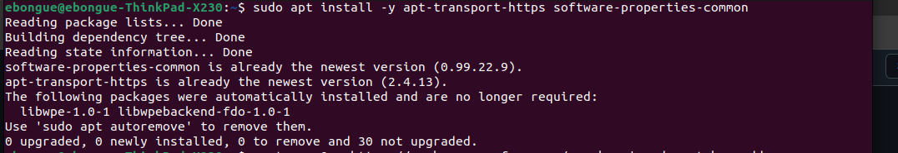
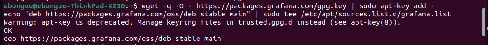
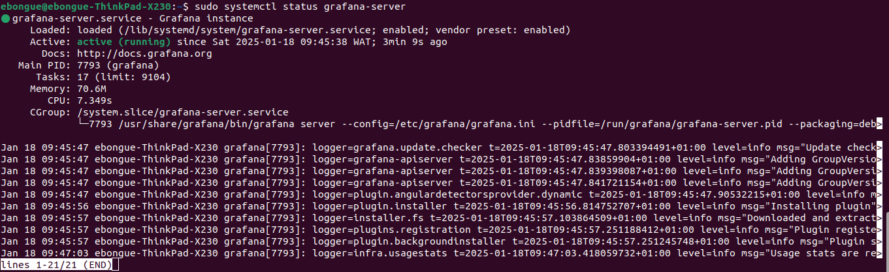
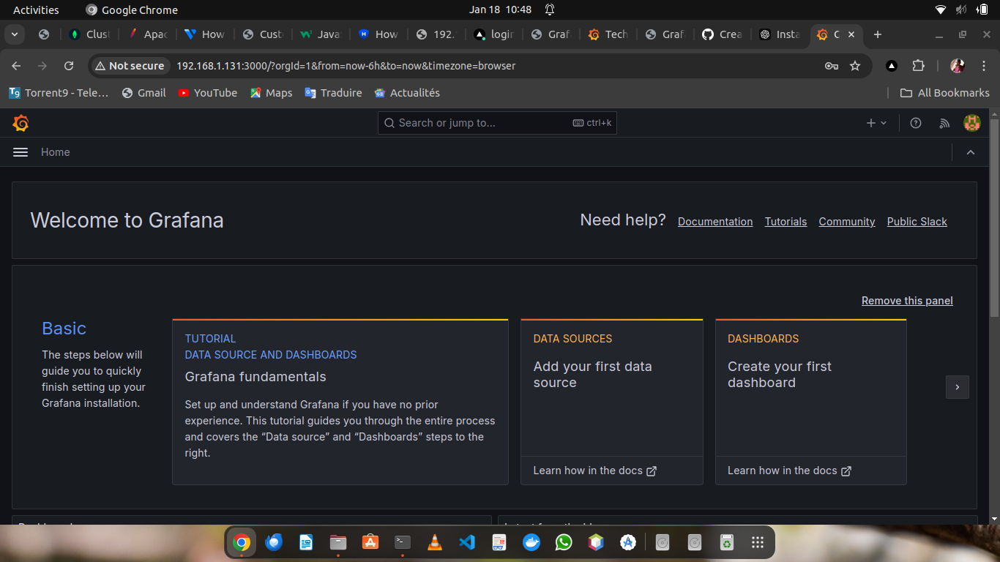

We install on Ubuntu22
Lets Start by
Update the machine
We open the terminal and type

sudo apt update && sudo apt upgrade -y
to refresh our Update the package list to ensure you have the latest version of all packagesInstall Grafana's Dependencies
To install all the Dependencies for grafana we type on the terminal

sudo apt install -y apt-transport-https software-properties-commonAdd APT Grafana Repository
We type the command to Add the Grafana APT repository and import its GPG key.

wget -q -O - https://packages.grafana.com/gpg.key | sudo apt-key add - echo "deb https://packages.grafana.com/oss/deb stable main" | sudo tee /etc/apt/sources.list.d/grafana.listInstall Grafana
Update the package list again and install Grafana.

sudo apt update sudo apt install grafana -yEnable Grafana
Start the Grafana service and enable it to start on boot.
sudo systemctl start grafana-server sudo systemctl enable grafana-serverVerify the Installation
Check the Grafana service status to ensure it is running:
sudo systemctl status grafana-server-
Launch the Grafana on Browser
Open your web browser and navigate to http://your server ip:3000.
Log in with the default credentials:
Username: admin
Password: admin (you'll be prompted to change it after the first login).
Grafana Home Display
Here comes the home page of Grafana
Conclusion
That's it! You now have a basic Grafana setup. You can further customize your dashboards and explore more advanced features as you become familiar with the platform. For detailed documentation, visit the Grafana Documentation.